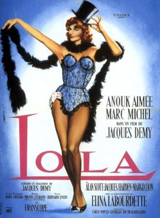

Jacques Demy
1961
90 minutes
TITLE: Lola TEXT PLACEHOLDER 224
This is another Jacques Demy film, the same director who did the musical The Umbrellas of Cherbourg. This one isn't a musical, but it has a similar vibe. It has been described by others as "a musical without music", which is either a compliment or a warning depending on how you feel about the non-musical parts of musicals. As with many French New Wave and adjacent films, it stars a gorgeous lead actress, in this case Anouk Aimée. There are worse things to do than watch a film with her in it for ninety minutes. Beautiful women are not a reason to watch a film alone, but they can certainly make them feel rewarding.
Anouk Aimée plays Lola, a cabaret dancer/stripper/semi-prostitute sort in a French city that's not right by the sea but at least on the Loire and near enough to the ocean to be haunted by sailors and criminals. Lola has several men vying for her attention, and the plot involves some of these men being doomed to failure. There's also a little girl in it who is clearly on the way of starting Lola's cycle over when she runs away in the end. It's a bittersweet film, light and ultimately without too much meaning or impact. The leads are all likeable enough where it feels like you're left on your own deciding which one of them if any you'd like to see Lola end up with, and Lola is likeable enough that you want the best for her and you're glad she seems to have good options to choose from. But it's quickly obvious that not everyone is going to walk away satisfied.
You're not going to like this as much as The Umbrellas of Cherbourg since that works better as a full-blown musical. And years ago you would have hated this film and dismissed it as a trifle. But you find yourself now unable to dismiss it entirely. At this point in your life you aren't particularly moved by it, though, so it's probably just best to drop it and move on. At least it will give you context for whatever is next.
Time to choose something different: